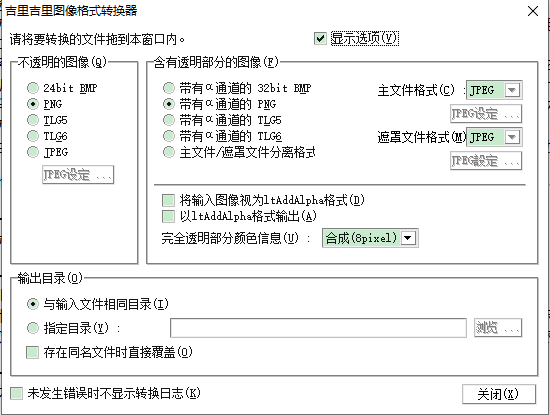

通过将要转换的文件拖放到图像格式转换器窗口上进行转换。也可以拖放多个文件。
您可以为不透明或透明的图像指定不同的格式。
“不透明图像”是指整个图像完全不透明的图像（例如，KAG中使用的背景图像）。“透明图像”是指具有透明部分的图像（例如，KAG中使用的前景图像）。
如果图像中的所有像素都完全不透明，即使图像格式具有等效信息，也会被视为“不透明图像”。
转换完成后，将显示一个日志，您可以在其中查看每个文件的转换是成功还是失败。
以下是画面说明。

运行时，您将看到上面的画面。
- 「显示选项」
- 选中后，将显示下面的设置部分。取消选中后，窗口将只显示顶部，并且横向变长。如果不需要设置选项，则可以使窗口更紧凑。
- 「不透明的图像 - 24bit BMP」
- 选择24位BMP作为不透明图像的输出格式。
- 「不透明的图像 - PNG」
- 选择PNG作为不透明图像的输出格式。
- 「不透明的图像 - TLG5」
- 选择TLG5作为不透明图像的输出格式。
- 「不透明的图像 - TLG6」
- 选择TLG6作为不透明图像的输出格式。
- 「不透明的图像 - JPEG」
- 选择JPEG作为不透明图像的输出格式。
- 「不透明的图像 - JPEG 设定...」
- 如果选择JPEG作为不透明图像的输出格式，请选择JPEG的压缩质量。
- 「含有透明部分的图像 - 32bit BMP (主+遮罩)」
- 选择 32位BMP 作为透明图像的输出格式。
- 「含有透明部分的图像 - 带Alpha通道的 PNG (主+遮罩)」
- 选择带Alpha通道的PNG作为透明图像的输出格式。
- 「含有透明部分的图像 - 带Alpha通道的 TLG5 (主+遮罩)」
- 选择带Alpha通道的 TLG5 作为透明图像的输出格式。
- 「含有透明部分的图像 - 带Alpha通道的 TLG6 (主+遮罩)」
- 选择带Alpha通道的 TLG6 作为透明图像的输出格式。
- 「含有透明部分的图像 - 主/遮罩分离格式」
“”
另外，在JPEG的情况下，通过点击“JPEG选项”按钮，可以选择JPEG的压缩品质。
- 指定主/遮罩分离格式作为具有透明信息的图像的输出格式。选择主/遮罩使用什么格式。此外，对于JPEG，可以通过单击「JPEG设定」按钮来选择JPEG的压缩质量。
- 「含有透明部分的图像 - 将输入图像视为ltAddAlpha格式す」
- 如果选中此选项，则将输入图像视为ltAddAlpha格式，即适合在吉里吉里的Layer.type属性中指定为ltAddAlpha的加法alpha混合格式。 受此选项影响的输入图像格式为BMP、PNG、主/遮罩分离格式，PSD格式不受影响。
如果未选中此选项，则输入图像将被视为ltAlpha格式。大多数图形软件的输出形式和PNG的规格都是ltAlpha形式，所以一般不要勾选这个选项。
如果在未选中此选项的情况下，并且选中后述的「以ltAddAlpha格式输出」，则图像格式转换器将从ltAlpha格式转换为ltAddAlpha格式。
如果选中此选项，则会自动选中「以ltAddAlpha格式输出」选项。另外，「完全透明部分的颜色信息」的选项变得不可用（alpha信息和颜色信息都不会在图像格式转换器中加工）。
- 「含有透明部分的图像 - 以ltAddAlpha格式输出」
- 如果选中此选项，则输出图像将以ltAddAlpha格式输出。
如果未选中此选项，则输出图像的格式将是ltAlpha格式，或者如果是从PSD文件输入，则输出图像的格式将与该文件中包含的层的混合模式相对应。
因为各种各样的图形软件，PNG的规格只接受ltAlpha形式的图像，输出图像非用于吉里吉里的情况，一般不要勾选。
如果选中此选项，则「完全透明部分的颜色信息」选项将禁用（alpha信息和颜色信息都不会在图像格式转换器中加工）。
- 「含有透明部分的图像 - 完全透明部分的颜色信息」
- 指定如何处理图像的全透明部分。
通常，对于ltAlpha格式的图像，即使是完全透明的部分也会有颜色信息。这些部分是完全透明的，因此在显示时会被忽略，但在处理图像（包括JPEG等压缩）时不会被忽略。
指定如何处理此全透明区域。
- 除去
- 如果指定除去，则将删除完全透明部分的颜色信息（准确地说是用黑色填充）。
通常，如此指定是OK的。
- 保持
- 不进行处理。保留原始图像。
如果完全透明的部分有多余的信息的话，因为会压缩到多余的信息，所以压缩率会变差。
- 合成
- 将完全透明区域的颜色与周围不透明区域的颜色进行采样并混合。
可以从1,2,3,5,8pixel中选择合成的强度。在指定距离内的不透明部分的像素颜色（以像素为单位）合成完全透明部分的颜色。值越大，处理时间越长。将删除此处指定距离之外的完全透明部分的颜色。
例如，在JPEG中压缩主图像时，由于JPEG的特性，在颜色急剧变化的地方会产生蚊式噪声。在前景图像的情况下，如果不进行「混合」处理，在完全不透明部分和不透明部分的边界有急剧的颜色变化的情况下，容易在该部分发生。进行「混合」处理后，由于完全透明部分的颜色是由不透明部分的颜色混合的，所以可以抑制颜色变化的差异，蚊式噪声的产生。另外，在一般的JPEG中，颜色的信息会与相邻的像素混合，也可以使用「混合」处理，可以抑制（没有混合的情况下）非预期的完全透明部分的颜色和不透明部分的颜色混合。
一般请选择「除去」。完全透明的部分不需要颜色信息。另外，如果进行除去的话，图像压缩后的文件大小也可以变小。
如果选中「以ltAddAlpha格式输出」，则此选项不可用。ltAddAlpha格式的「完全透明」不透明度为0，颜色只能是全黑。
- 「输出目录 - 与输入文件相同目录」
- 将输出文件输出到与输入文件相同的文件夹中。
- 「输出目录 - 指定目录」
- 将输出文件输出到下面输入栏中指定的文件夹。
单击「浏览 ...」按钮可显示用于选择输出文件夹的对话框。
如果在输入栏中指定了相对文件夹，则可以指定相对于输入文件所在文件夹的位置。
- 「输出目录 - 存在同名文件时直接覆盖」
- 如果选中此复选框，则会覆盖同名文件（如果有）。
- 「未发生错误时不显示转换日志」
- 如果选中此复选框，则在转换完成且转换过程中未出现错误时，将不显示日志检查窗口。
- 「关闭」
- 退出此工具。